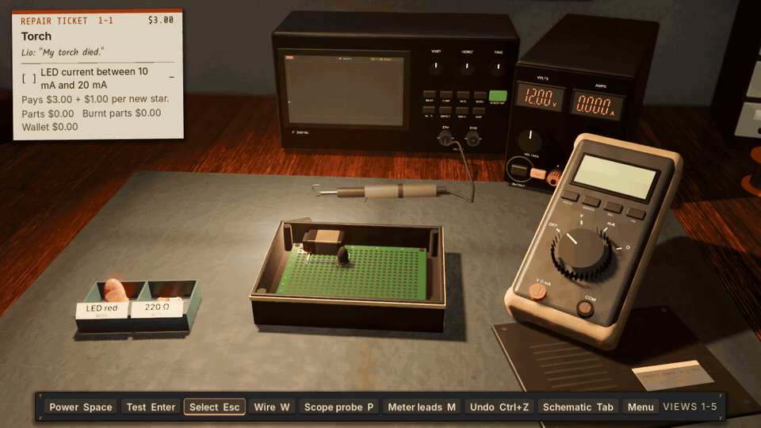
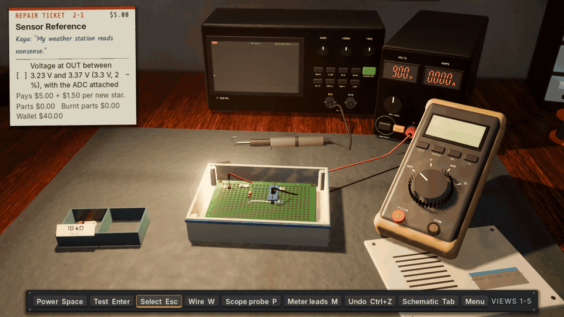
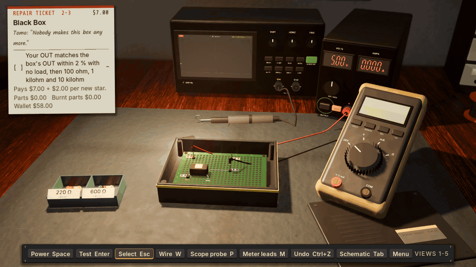
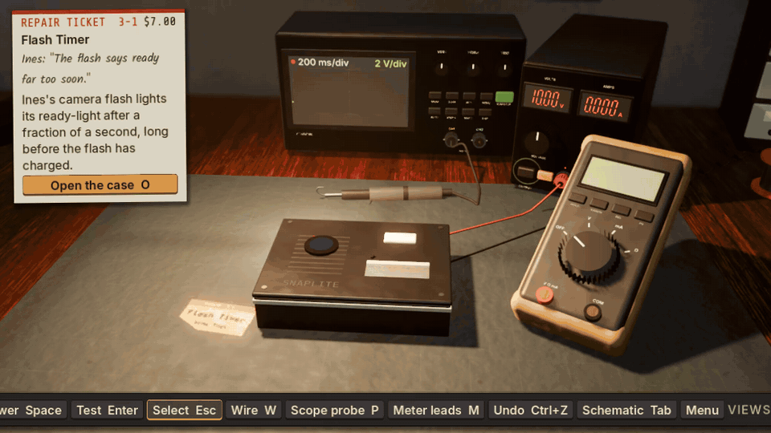
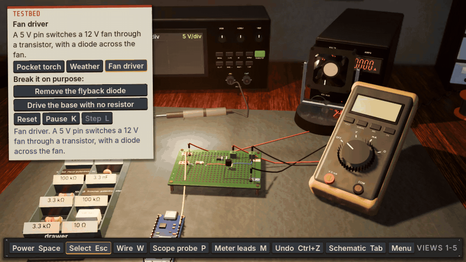
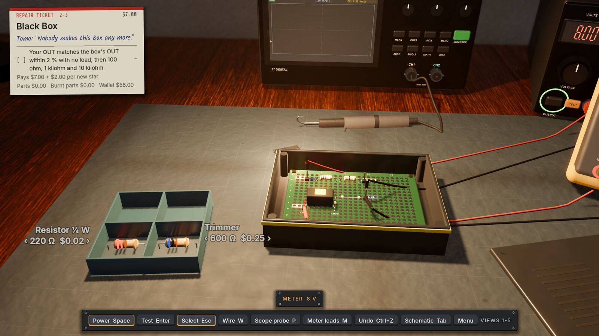

CIRCUITS
Fix broken electronics on your own bench.
Customers bring broken devices to your bench. Open them, measure them, swap the faulty parts.
Pre-alpha. Free. Linux and Windows. Chapters 1 to 3 are on the 3D bench, with a testbed of devices to break.

How it plays





Honest by design
A circuit simulator owns every number. A burnt part stays burnt.
Five chapters, 23 tickets. The wiki lists them all.